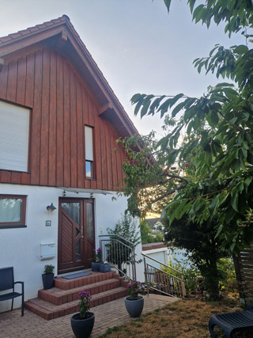
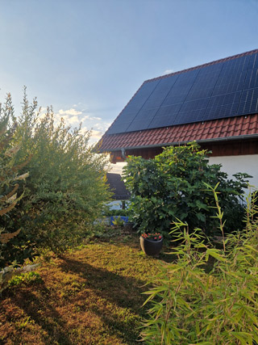
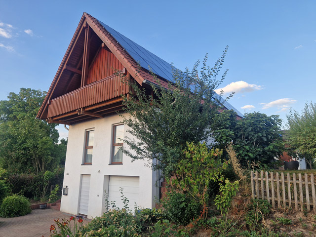
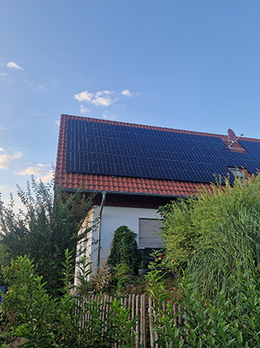
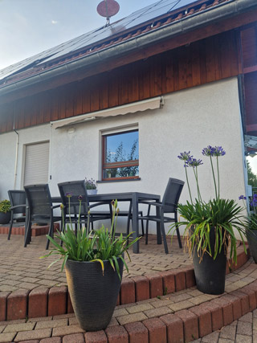
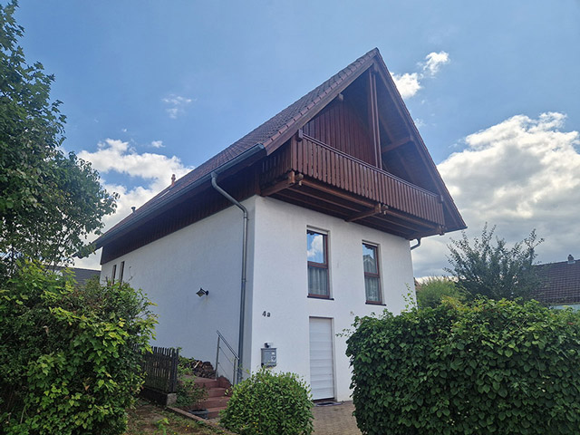

Auszeit aus der Stadt
Wohnhaus Sandra
- Geschosse: 2 + Keller
- Wohnfläche: 148 m²
- Zimmer: 5
- Energie: KfW-40
- PV: 7,5 kWp
- Heizung: Luft-Wasser-Wärmepumpe
- Fenster: 3-fach verglast, Holz-Alu
- Bauweise: Massivbau (Ziegel + Stahlbeton)
- Dachform: Satteldach, 28°
- Bauzeit: ca. 9 Monate
- Grundstück: 520 m²
- Stellplätze: 2
- Planung: Architektin Sandra Klein
- Statik: Ingenieurbüro H. Weber
- Bauleitung: Büro Wohnglück
- Preis: 498.000 €
Wohnhaus Sandra ist ein zweigeschossiges Einfamilienhaus mit vollwertigem Keller, entworfen für eine ruhige Wohnlage und einen klar strukturierten Alltag. Der Entwurf stammt von Architektin Susanna Beispiel, die das Haus gemeinsam mit den zukünftigen Bewohnern entwickelt hat. Die Planung legt Wert auf eine klare, funktionale Struktur und eine warme, zeitlose Atmosphäre.
Großzügige Fensterflächen holen viel Tageslicht ins Innere und schaffen eine weiche Verbindung zum Garten. Die Raumorganisation folgt einem alltagsnahen Ablauf: ein offener Wohn und Essbereich im Erdgeschoss, darüber private Schlaf und Arbeitsräume mit Blick ins Grün. Der Keller bietet Platz für Technik, Hobby und Stauraum und entlastet die Wohnbereiche.
Die technische Ausstattung ist bewusst effizient gewählt: eine moderne Wärmepumpe, hochwertige Dämmung und eine PV Anlage sorgen für niedrige Betriebskosten und einen nachhaltigen Energiehaushalt. Die Materialwahl ist zurückhaltend, Holz, Putz, Glas, und unterstützt die ruhige, freundliche Wirkung des Hauses.
„Ich wollte ein Haus schaffen, das nicht laut ist, sondern leise begleitet — ein Ort, der einfach gut tut.“ ~ Susanna Beispiel
„Die Planung war sehr persönlich. Man merkt, dass das Haus nicht nur gebaut, sondern wirklich für uns gedacht wurde.“ ~ Bauherren Lina & Jonas





